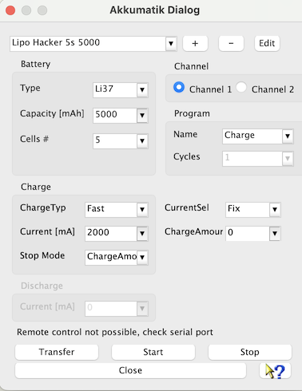

The Akkumatik device dialog is used to create and manage charging programs in any number. The program data is stored in a file called Akkumatik_Settings.xml. This file is also created if it does not already exist. Please refer to the general help under "Directories used" to see how the base directory of the settings is defined for the operating system used. With each closing of the dialog all made changes are stored, without asking. The last visible program will be displayed again the next time the dialog is opened.
After the serial port has been set via the device selection dialog and this device dialog has been called, the program currently visible in the dialog can be transferred to the device for the selected channel by "Transfer". If no program is transferred and Start is nevertheless pressed, the device starts the current program memory for the selected channel. With Stop, a possible running program on the selected channel is stopped.

When creating a new charging program, "Plus", a consecutive generic name is assigned. This name can be freely changed via "Edit". A name change must be confirmed with the Enter key. With "Minus", the displayed charging program is deleted and removed from Akkumatik_Settings.xml. Individual fields with numbers, such as capacity, currents and charge amount can be selected quickly via the drop-down selection. It is also possible to overwrite these fields, but here the end of the input has to be confirmed with Enter. Currently, only a check for minimum and maximum values takes place. There is no plausibility check as to whether the entered value can be sensibly applied to the connected battery at all.
Via the question mark you can reach a help text as a quick guide.